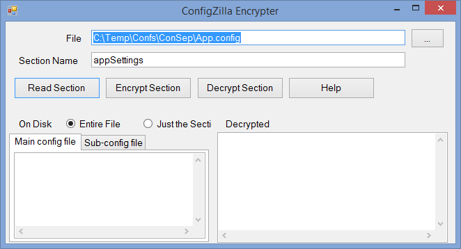
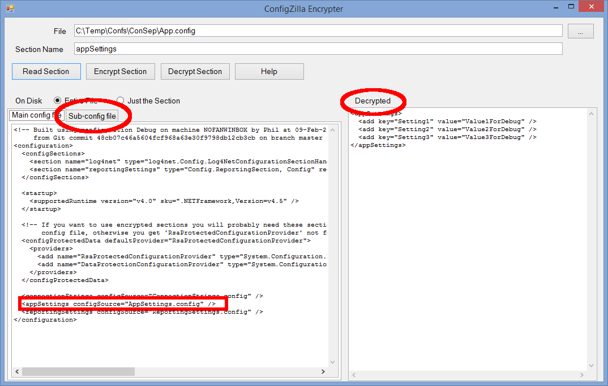
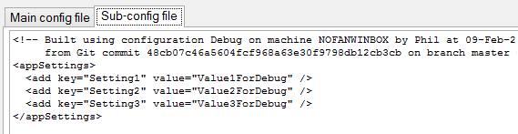
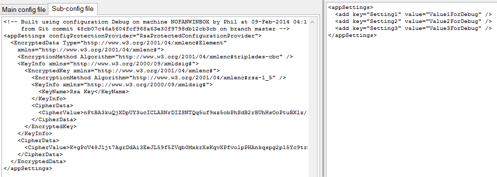

If your config files contain sensitive information such as SQL passwords then it is a good idea to encrypt them. You can use the command line tool aspnet_regiis.exe to do this but ConfigZilla also supplies a graphical application that you can use to encrypt, decrypt, and view the encrypted settings. It is called "ConfigZilla.Encrypter" and is available in the git repository (it is not downloaded when you install ConfigZilla via NuGet, you need to clone the repo). Encrypting your config files has no impact on your application; .Net knows how to automatically decrypt sections and will present the unencrypted values to your application.
When you run the app (it will request admin privileges) the following window appears:
Type or browse for the config file you want to view. Even if you are using separate config files you should always enter the name of the main config file here. Also enter the name of the section you are interested in, for example "appSettings". The file will be loaded and down the left you will see the configuration file as it exists on disk. This may be encrypted. On the right hand side you will see the section in question, decrypted if necessary.
If you are using separate config files, as this example is, then you will see a tab called "Sub-config file" appear. This shows the contents of that file, AppSettings.config in this case:
Hitting the "Encrypt Section" button will encrypt it:
The file is immediately re-read from disk so that you can verify that it has worked correctly. Note that the right hand side still shows the unencrypted values.
Encrypter also has a simple to use command line mode so you can use it during automatic deploys. The options are:
-r section file read the section and display in plain text
-e section file encrypt the section
-d section file decrypt the section